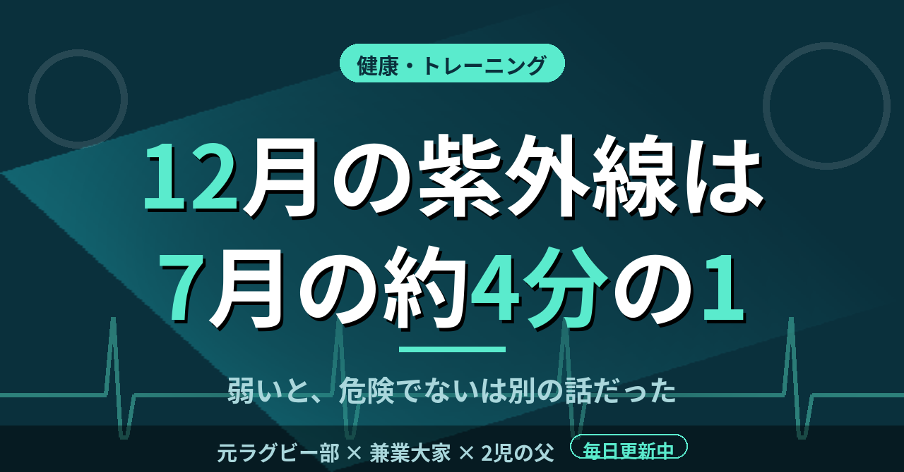

健康・トレーニング12月の紫外線は7月の約4分の1。ダーマペンを3年続ける僕が、冬の日焼け止めを考えた
今年の夏、水光注射を見送った理由の一つは季節だった。紫外線の強い時期に、肌の内側に手を入れるのは気が進まなかった。11月も終わりに近づき、冬ならもう気にしなくていいだろうと考えかけたところで、本当にそう言えるのかを数字で確かめたくなった。
12月の紫外線は7月の約4分の1
気象庁は、茨城県つくば市で観測した「日最大UVインデックス」の月平均値を、2005年から公開している。1日のうちで最も強くなった時間のUVインデックスを、月ごとに平均した値だ。
2005〜2025年の21年分を並べると、7月は5.1〜8.5、12月は1.5〜1.8の範囲に収まっている。単純に平均すると7月が約7.0、12月が約1.6で、12月は7月の約4分の1になる。11月は2.1〜2.5、1月は1.6〜2.1だった。去年の2025年は、7月が8.5、12月が1.6だ。
UVインデックスは世界保健機関（WHO）の区分で、1〜2が「弱い」、3〜5が「中程度」、6〜7が「強い」、8〜10が「非常に強い」、11以上が「極端に強い」とされている。つくばの12月の月平均は「弱い」の範囲で、7月は年によって「中程度」から「非常に強い」まで動く。数字で見ると、冬はたしかに弱い。
「冬の紫外線は危険ではない」は間違いとされている
ただ、環境省の「紫外線環境保健マニュアル」（2008年改訂版）は、「冬の間の紫外線は危険ではない」という考えを、よくある間違いの一つとして挙げている。冬の紫外線は一般に弱いが、雪の反射で2倍近い量を浴びることがある、という説明だ。新雪の反射率は80％とされている。
同じマニュアルには、紫外線は4〜9月に1年間のおよそ70〜80％が集中するとも書かれている。裏返せば、10〜3月の半年にも2〜3割は降っている。ゼロになる季節はない。
僕は今、雪山に行く予定はない。それでも週末は、2歳と0歳を連れて外に出ることが多い。月平均で「弱い」でも、晴れた日の昼に何時間も外にいれば、浴びる量は積み上がっていく。
ラグビーをしていた頃は塗らなかった
小学5年から大学までラグビーをしていて、日焼け止めを塗った記憶はほとんどない。夏の合宿も秋の花園予選も、顔は焼けたまま放っておいた。大学までは、見た目にまったく気を使ってこなかった。
美肌治療を始めたのは3年前、関東の工場から京都の研究所に移った頃だ。外に出る時間が減り、鏡を見て「このまま年を取ったら怖い」と思った。ダーマペン、フラクショナルレーザー、ピコトーニング、水光注射の4つを試し、費用対効果を比べてダーマペンに一本化した。1回9,000円以下に抑えて続けている。
クリニックの肌診断では「年齢の割に状態は悪くない」と言われた。ただ、妻と子どもの肌を見ると、その基準にはまだ届いていないと感じる。ここまで整えてきたのは表面で、次は内側に手を入れたい。その順番を考えると、紫外線が弱い季節に何をどこまでやるかは、僕にとって段取りの問題になる。
僕が冬に決めたこと
僕の場合は、冬も日焼け止めをやめないことにした。12月の平均は7月の4分の1でも、ゼロではない。これからの施術を冬に寄せるなら、その間に浴びる分を減らしておく意味は、僕の中では大きい。
一方で、夏と同じように何度も塗り直すほどではないとも考えている。外に出る日だけ、出る前に塗る。子どもと公園に行く週末と、ゴルフの日だ。ゴルフは冬でも、1ラウンドで4〜5時間は外にいる。
冬の紫外線は弱い。ただ、弱いことと危険でないことは別の話だった。数字を見て、ようやくその2つを分けて考えられるようになった。
この記事は note にも掲載しています。